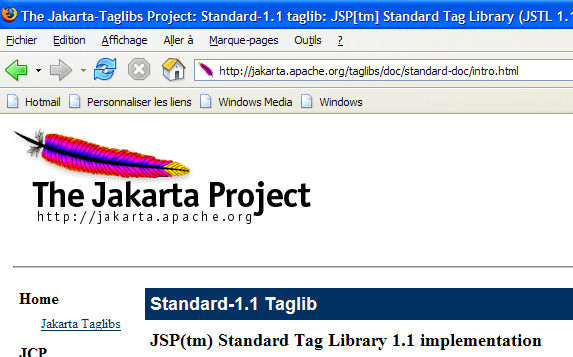
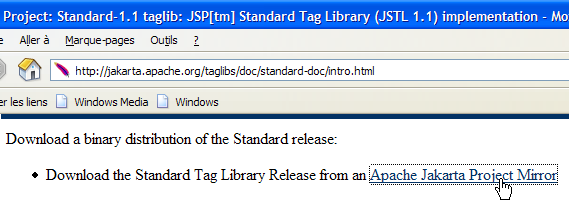
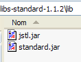

8. The JSTL Tag Library
8.0.1. Introduction
Consider the [erreurs.jsp] view, which displays a list of errors:

There are several ways to write such a page. Here, we are only interested in the error display portion. One solution is to use Java code as was done:
<%@ page language="java" contentType="text/html; charset=ISO-8859-1"
pageEncoding="ISO-8859-1"%>
<!DOCTYPE HTML PUBLIC "-//W3C//DTD HTML 4.01 Transitional//EN">
<%@ page import="java.util.ArrayList" %>
<%
// retrieve data from the model
ArrayList errors = (ArrayList) request.getAttribute("errors");
String formSubmitLink = (String)request.getAttribute("formSubmitLink");
%>
<html>
<head>
<title>Person</title>
</head>
<body>
<h2>The following errors occurred</h2>
<ul>
<%
for(int i=0;i<errors.size();i++){
out.println("<li>" + (String) errors.get(i) + "</li>\n");
}//for
%>
</ul>
<br>
<form name="frmPersonne" method="post">
<input type="hidden" name="action" value="submitForm">
</form>
<a href="javascript:document.frmPersonne.submit();">
<%= returnToForm %>
</a>
</body>
</html>
The JSP page retrieves the list of errors from the request (line 8) and displays it using a Java loop (lines 19–23). The page mixes HTML and Java code, which can be problematic if the page needs to be maintained by a web designer who generally won’t understand the Java code. To avoid this mixing, tag libraries are used to bring new capabilities to JSP pages. With the JSTL (Java Standard Tag Library) tag library, the previous view becomes the following:
<%@ page language="java" contentType="text/html; charset=ISO-8859-1"
pageEncoding="ISO-8859-1"%>
<!DOCTYPE HTML PUBLIC "-//W3C//DTD HTML 4.01 Transitional//EN">
<%@ taglib uri="/WEB-INF/c.tld" prefix="c" %>
<html>
<head>
<title>Person</title>
</head>
<body>
<h2>The following errors occurred</h2>
<ul>
<c:forEach var="error" items="${errors}">
<li>${error}</li>
</c:forEach>
</ul>
<br>
<form name="frmPersonne" method="post">
<input type="hidden" name="action" value="submitForm">
</form>
<a href="javascript:document.frmPersonne.submit();">
${formSubmitLink}
</a>
</body>
</html>
The tag (line 4)
indicates the use of a tag library defined in the file [/WEB-INF/c.tld]. These tags will be used in the page code, prefixed with the letter c (prefix="c"). You can use any prefix of your choice. Here, c stands for [core]. Prefixes allow you to use tag libraries that might have the same names for certain tags. Using a prefix resolves any ambiguity. The new page no longer has Java code in the two places where it previously did:
- retrieving the page template [errors, returnToFormLink] (removed section)
- displaying the list of errors (lines 13–15)
The error display loop has been replaced by the following code:
<c:forEach var="error" items="${errors}">
<li>${error}</li>
</c:forEach>
- The <forEach> tag is used to define a loop
- The ${variable} notation is used to display the value of a variable
The <forEach> tag has two attributes here:
- items="${errors}" specifies the collection of objects to iterate over. Here, the collection is the errors object. Where is this found? The JSP page searches for an attribute named "errors" successively and in the following order:
- the [request] object, which represents the request sent by the controller: request.getAttribute("errors")
- the [session] object, which represents the client's session: session.getAttribute("errors")
- the [application] object, which represents the web application context: application.getAttribute("errors")
The collection designated by the items attribute can take various forms: array, ArrayList, object implementing the List interface, etc.
- var="error" is used to name the current element of the collection being processed. The <forEach> loop will be executed successively for each element of the items collection. Inside the loop, the element of the collection being processed will therefore be referred to here as error.
The ${error} syntax inserts the value of the error variable into the text. This variable is not necessarily a string. JSTL uses the error.toString() method to insert the value of the error variable. Instead of the ${error} syntax, you can also use the <c:out value="${error}"/> tag.
Returning to our example of displaying errors:
- the controller will place an ArrayList of error messages—that is, an ArrayList of String objects—in the request sent to the JSP page: request.setAttribute("errors", errors), where errors is the ArrayList;
- because of the attribute items="${errors}", the JSP page will look for an attribute named errors, successively in the request, the session, and the application. It will find it in the request: request.getAttribute("errors") will return the ArrayList placed in the request by the controller;
- The error variable of the var="error" attribute will therefore refer to the current element of the ArrayList, which is a String object. The error.toString() method will insert the value of this String—in this case, an error message—into the page’s HTML output.
The objects in the collection processed by the <forEach> tag can be more complex than simple strings. Let’s take the example of a JSP page that displays a list of articles:
where [listarticles] is an ArrayList of objects of type [Article], which we assume to be a JavaBean with the fields [id, name, price, currentStock, minimumStock], each of these fields having its own get and set methods. The [listarticles] object was placed in the request by the controller. The preceding JSP page retrieves it in the items attribute of the forEach tag. The current article object (var="article") therefore refers to an object of type [Article]. Consider the tag on line 3:
What does ${article.nom} mean? Actually, it means various things depending on the nature of the article object. To obtain the value of article.nom, the JSP page will try two things:
- article.getNom() - note the spelling getNom to retrieve the name field (JavaBean standard)
- article.get("name")
The [article] object can therefore be a bean with a "name" field, or a dictionary with a "name" key.
There are no limits to the depth of the object being processed. Thus, the tag
allows you to process an object [individu] of the following type:
class Individual{
private String lastName;
private String firstName;
private Individual[] children;
// JavaBean standard methods
public String getLastName(){ return lastName;}
public String getFirstName() { return firstName; }
public Person getChildren(int i) { return children[i]; }
}
To obtain the value of ${person.children[1].lastName}, the JSP page will try various methods, including this one, which will succeed:
person.getChildren(1).getLastName() where person refers to an object of type Person.
8.0.2. Installing and Exploring the JSTL Library
The explanations provided above will suffice for the application we are interested in, but the JSTL tag library offers other tags besides those presented. To explore them, you can run a tutorial included in the library package.
We will use the JSTL 1.1 implementation of the [Jakarta Taglibs] project available at the URL [http://jakarta.apache.org/taglibs/] (May 2006):
 |  |
 |  |
 |  |
The downloaded ZIP file contains the following:

The two files with the .war extension are web application archives:
- standard-doc: documentation on JSTL tags
- standard-examples: examples of tag usage
We will deploy this application within Tomcat. We launch Tomcat using the appropriate option in the [Start] menu, then enter the URL [http://localhost:8080] and follow the [Tomcat Manager] link:

We are then presented with an authentication page. We log in as manager/manager or admin/admin, as shown in section 2.3.3.

We are presented with a page listing the applications currently deployed in Tomcat:

We can add a new application using the forms at the bottom of the page:

We use the [Browse] button to select a .war file to deploy.

The screenshot does not show it, but we have selected the [standard-examples.war] file from the downloaded JSTL distribution. The [Deploy] button saves and deploys this application within Tomcat.

The [/standard-examples] application has been successfully deployed. We launch it:

Readers are encouraged to follow the various links provided on this page when looking for examples of how to use JSTL tags.
The [standard-doc] application can be deployed in the same way from the [standard-doc.war] file. It provides access to fairly technical information about the JSTL library. It is of less interest to beginners.
8.0.3. Using JSTL in a Web Application
In the examples provided with the JSTL 1.2 library, JSP pages begin with the following tag:
We have already encountered this tag in Section 8.1.1, and we provided a brief explanation:
- [uri]: URI (Uniform Resource Identifier) where the definitions of the tags used in the page are located. This URI will be used by the web server when the JSP page is translated into Java code to become a servlet. It is also used by web page development tools to verify the correct syntax of the tags used in the page or to provide autocomplete suggestions. When you start typing a tag, a tool familiar with the library can then suggest possible attributes for that tag to the user.
- [prefix]: prefix that identifies these tags on the page
The URI [http://java.sun.com/jsp/jstl/core] cannot be used if you are not connected to the public internet. In this case, you can place the tag definition file locally. Several such files are provided with the JSTL 1.2 distribution in the [tld] (Tag Language Definition) folder:

JSTL is actually a collection of tag libraries. We will only use the [c.tld] library, known as the "core" library. We will place the [c.tld] file mentioned above in the [WEB-INF] folder of our applications:

and include the following tag in our JSP pages to declare the use of the "core" library:
While using tag libraries allows us to avoid putting Java code in JSP pages, these tags are of course translated into Java code when the JSP page is compiled into a Java servlet. They use classes defined in two JAR files [jstl.jar, standard.jar] found in the [lib] folder of the JSTL distribution:

These two JAR files are placed in the [WEB-INF/lib] folder of our applications:

We now have the basics to tackle the next version of our sample application.